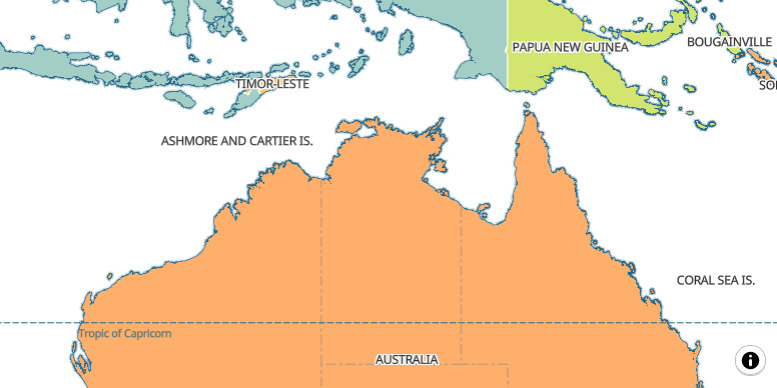

Farewell Web Mercator
State of the Map Europe 2024 Łódź
Size distortion

Africa actually has 14 times as much area as Greenland
Thematic mapping

Mercator projection

- Gerardus Mercator, 1596
- Conformal cylindrical map projection
- Good for navigation


Equal Earth Greenwich

EPSG:8857
Scaled grid

MapLibre

https://equal.bbox.earth/maplibre/
Web Mercator grid
DeckGL

https://equal.bbox.earth/deckgl/
MapLibre map with DeckGL layer using Web Mercator tile grid.
Proposal: Combined projections

https://equal.bbox.earth/maplibre-eq2merc/
Equal Earth tiles at z0-z2 and Web Mercator tiles with z >= 3.
OSM basemap with combined projections

MapLibre with Shortbread PMTiles.
Dynamic center meridian

https://observablehq.com/d/ece4d307c72c1312
Reproject WGS-84-Tiles?